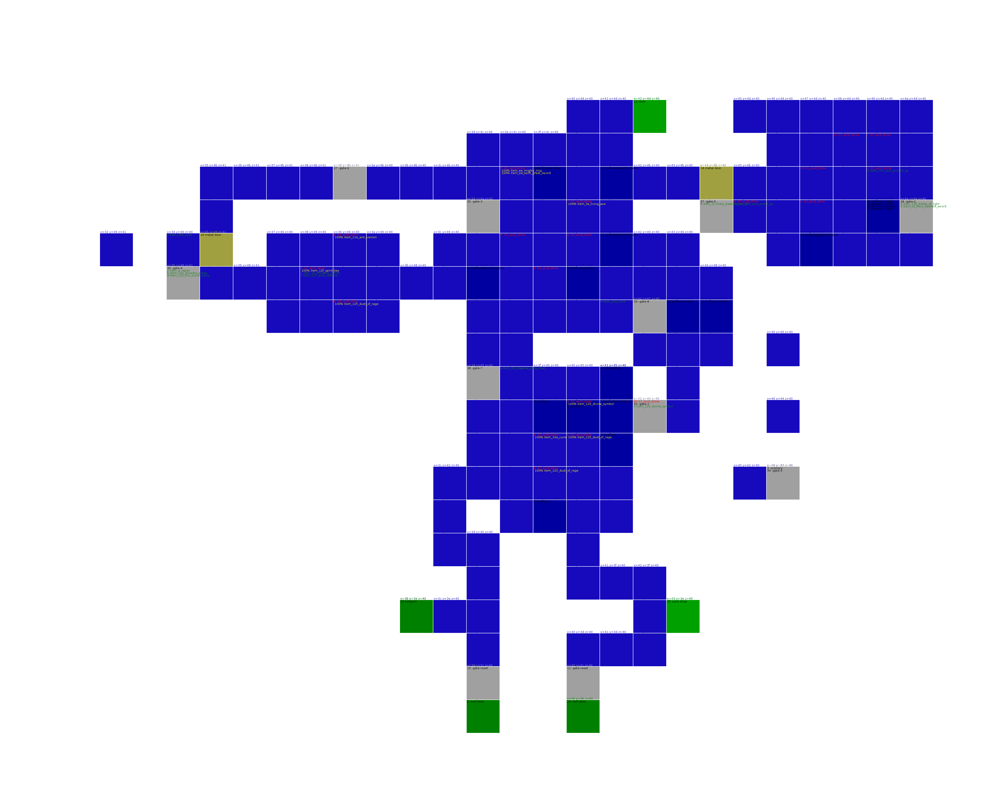
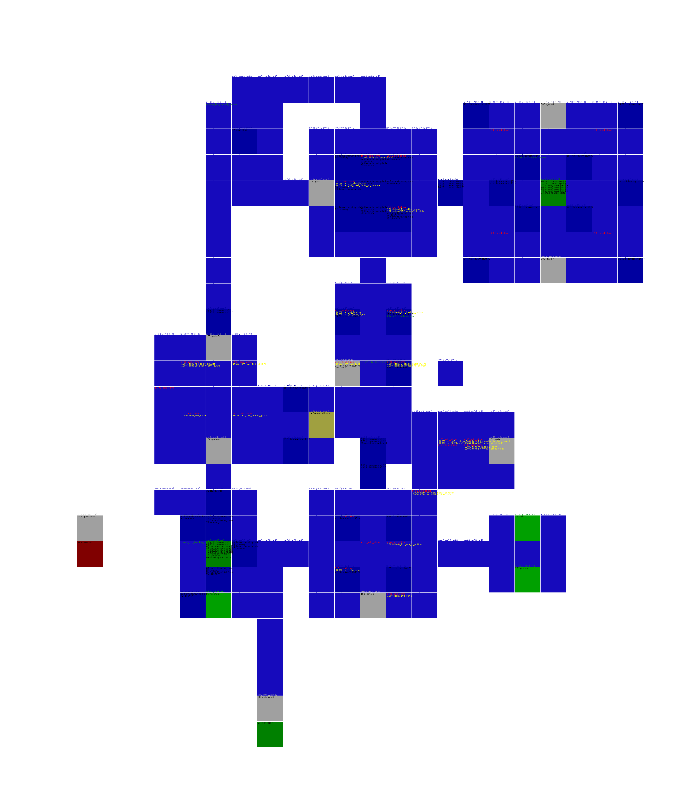
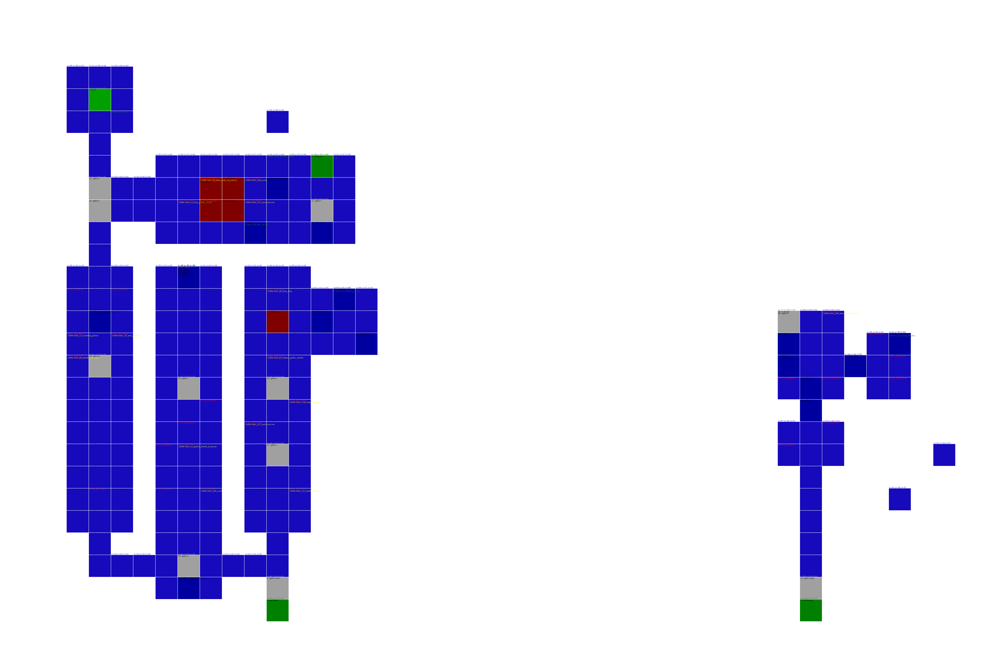
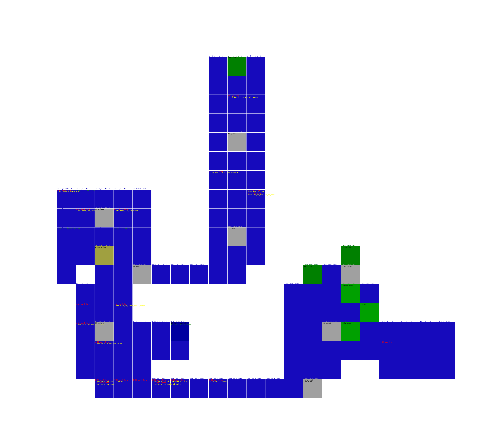
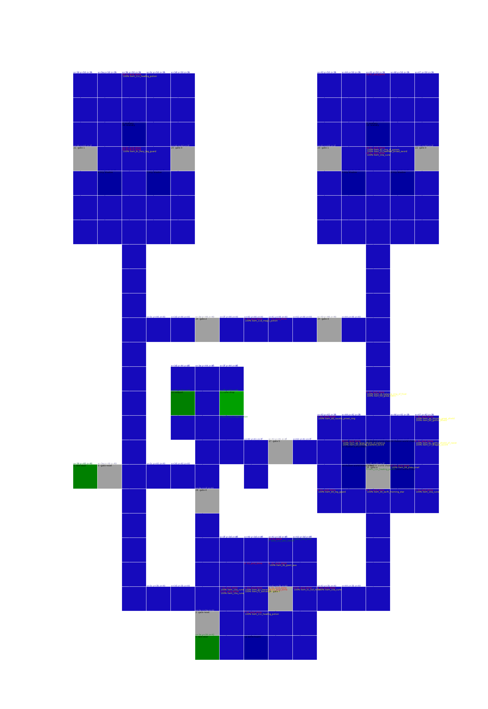
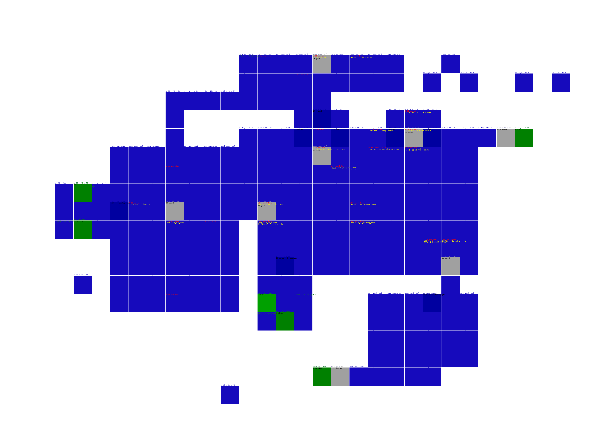
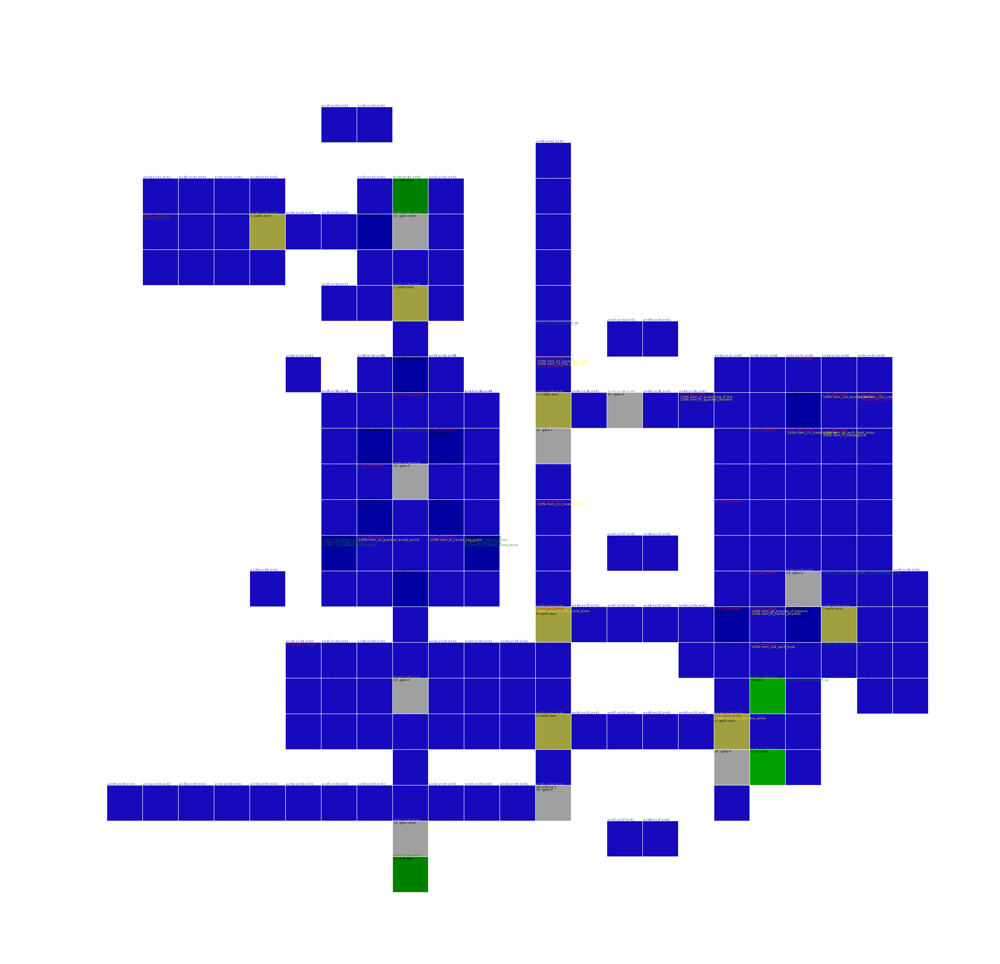

graph TD
shadow_tower_part1a[Shadow Tower Part1 A] -- Tower Top --> monster_world_false_eye_area[Monster World
False Eye Area 1]
shadow_tower_part1b[Shadow Tower Part1 B] -- Edge --> shadow_tower_part2b[Shadow Tower Part2 B 6]
shadow_tower_part1c[Shadow Tower Part1 C] -- Top --> shadow_tower_part3b[Shadow Tower Part3 B 10]
shadow_tower_part1b[Shadow Tower Part1 B] -- Middle --> water_world_sunken_river_area[Water World
Sunken River Area 7]
shadow_tower_part1c[Shadow Tower Part1 C] -- Edge --> fire_world_phoenix_cave[Fire World
Phoenix Cave 7]
shadow_tower_part1c[Shadow Tower Part1 C] -- Middle --> water_world_watery_labyrinth_area[Water World
Watery Labyrinth Area 6]
monster_world_false_eye_area[Monster World
False Eye Area 1] -- Entrance --> shadow_tower_part1a[Shadow Tower Part1 A]
monster_world_false_eye_area[Monster World
False Eye Area 1] -- Totem --> water_world_impure_pool_area[Water World
Impure Pool Area 2]
water_world_impure_pool_area[Water World
Impure Pool Area 2] -- Entrance --> earth_world_stone_cavern[Earth World
Stone Cavern 3]
water_world_impure_pool_area[Water World
Impure Pool Area 2] -- Flush down --> illusion_world_gloomy_domain[Illusion World
Gloomy Domain 3]
water_world_impure_pool_area[Water World
Impure Pool Area 2] -- Totem --> monster_world_false_eye_area[Monster World
False Eye Area 1]
earth_world_stone_cavern[Earth World
Stone Cavern 3] -- Entrance --> shadow_tower_part3b[Shadow Tower Part3 B 10]
earth_world_stone_cavern[Earth World
Stone Cavern 3] -- Exit --> water_world_impure_pool_area[Water World
Impure Pool Area 2]
illusion_world_gloomy_domain[Illusion World
Gloomy Domain 3] -- Entrance --> illusion_world_bewilderment_domain[Illusion World
Bewilderment Domain 4]
illusion_world_gloomy_domain[Illusion World
Gloomy Domain 3] -- Ladder down --> water_world_impure_pool_area[Water World
Impure Pool Area 2]
illusion_world_gloomy_domain[Illusion World
Gloomy Domain 3] -- Totem --> monster_world_screeching_area[Monster World
Screeching Area 4]
monster_world_screeching_area[Monster World
Screeching Area 4] -- Entrance --> shadow_tower_part3a[Shadow Tower Part3 A 10]
monster_world_screeching_area[Monster World
Screeching Area 4] -- Totem --> illusion_world_gloomy_domain[Illusion World
Gloomy Domain 3]
monster_world_screeching_area[Monster World
Screeching Area 4] -- Necron --> human_world_forgotten_region[Human World
Forgotten Region 5]
illusion_world_bewilderment_domain[Illusion World
Bewilderment Domain 4] -- Exit --> illusion_world_gloomy_domain[Illusion World
Gloomy Domain 3]
illusion_world_bewilderment_domain[Illusion World
Bewilderment Domain 4] -- Entrance --> shadow_tower_part2b[Shadow Tower Part2 B 6]
human_world_forgotten_region[Human World
Forgotten Region 5] -- Totem --> monster_world_screeching_area[Monster World
Screeching Area 4]
human_world_forgotten_region[Human World
Forgotten Region 5] -- Exit --> human_world_cursed_region[Human World
Cursed Region 6]
human_world_forgotten_region[Human World
Forgotten Region 5] -- Jump down --> earth_world_false_pit_cavern[Earth World
False Pit Cavern 6]
human_world_forgotten_region[Human World
Forgotten Region 5] -- Drop in --> water_world_white_rain_area[Water World
White Rain Area 6]
fire_world_burning_cavern[Fire World
Burning Cavern 5] -- Entrance --> shadow_tower_part3b[Shadow Tower Part3 B 10]
fire_world_burning_cavern[Fire World
Burning Cavern 5] -- Room --> illusion_world_worship_domain[Illusion World
Worship Domain 6]
fire_world_burning_cavern[Fire World
Burning Cavern 5] -- Platform --> illusion_world_worship_domain[Illusion World
Worship Domain 6]
human_world_solitary_region[Human World
Solitary Region 6] -- Skeleton --> earth_world_quaking_cavern[Earth World
Quaking Cavern 7]
human_world_solitary_region[Human World
Solitary Region 6] -- Cemetery --> illusion_world_worship_domain[Illusion World
Worship Domain 6]
human_world_solitary_region[Human World
Solitary Region 6] -- Grave --> human_world_hidden_region[Human World
Hidden Region 7]
human_world_solitary_region[Human World
Solitary Region 6] -- Church --> shadow_tower_part3a[Shadow Tower Part3 A 10]
human_world_cursed_region[Human World
Cursed Region 6] -- Entrance --> fire_world_phoenix_cave[Fire World
Phoenix Cave 7]
human_world_cursed_region[Human World
Cursed Region 6] -- Guardian side --> human_world_forgotten_region[Human World
Forgotten Region 5]
earth_world_false_pit_cavern[Earth World
False Pit Cavern 6] -- Bridge --> shadow_tower_part3c[Shadow Tower Part3 C 10]
earth_world_false_pit_cavern[Earth World
False Pit Cavern 6] -- Entrance --> human_world_forgotten_region[Human World
Forgotten Region 5]
earth_world_false_pit_cavern[Earth World
False Pit Cavern 6] -- Exit --> death_world_gate_of_the_dead[Death World
Gate Of The Dead 11]
earth_world_false_pit_cavern[Earth World
False Pit Cavern 6] -- Totem --> death_world_dark_castle_layer[Death World
Dark Castle Layer 7]
earth_world_false_pit_cavern[Earth World
False Pit Cavern 6] -- Jump in --> death_world_dark_castle_layer[Death World
Dark Castle Layer 7]
earth_world_hostile_rock_cavern[Earth World
Hostile Rock Cavern 6] -- Entrance --> shadow_tower_part2b[Shadow Tower Part2 B 6]
earth_world_hostile_rock_cavern[Earth World
Hostile Rock Cavern 6] -- Boss room --> human_world_hidden_region[Human World
Hidden Region 7]
water_world_watery_labyrinth_area[Water World
Watery Labyrinth Area 6] -- Entrance --> earth_world_poisonous_cavern[Earth World
Poisonous Cavern 7]
water_world_watery_labyrinth_area[Water World
Watery Labyrinth Area 6] -- Exit --> shadow_tower_part1c[Shadow Tower Part1 C]
water_world_white_rain_area[Water World
White Rain Area 6] -- Entrance --> earth_world_poisonous_cavern[Earth World
Poisonous Cavern 7]
water_world_white_rain_area[Water World
White Rain Area 6] -- Totem --> human_world_forgotten_region[Human World
Forgotten Region 5]
illusion_world_worship_domain[Illusion World
Worship Domain 6] -- Entrance --> human_world_solitary_region[Human World
Solitary Region 6]
illusion_world_worship_domain[Illusion World
Worship Domain 6] -- Rooms connection --> fire_world_ashen_cavern[Fire World
Ashen Cavern 8]
illusion_world_worship_domain[Illusion World
Worship Domain 6] -- Boss connection --> fire_world_burning_cavern[Fire World
Burning Cavern 5]
illusion_world_worship_domain[Illusion World
Worship Domain 6] -- Exit --> fire_world_burning_cavern[Fire World
Burning Cavern 5]
shadow_tower_part2a[Shadow Tower Part2 A 6] -- Top left --> earth_world_rotting_cavern[Earth World
Rotting Cavern 7]
shadow_tower_part2a[Shadow Tower Part2 A 6] -- Top right --> shadow_tower_part3a[Shadow Tower Part3 A 10]
shadow_tower_part2b[Shadow Tower Part2 B 6] -- Edge --> shadow_tower_part1b[Shadow Tower Part1 B]
shadow_tower_part2b[Shadow Tower Part2 B 6] -- Middle --> earth_world_hostile_rock_cavern[Earth World
Hostile Rock Cavern 6]
shadow_tower_part2b[Shadow Tower Part2 B 6] -- Upper --> illusion_world_bewilderment_domain[Illusion World
Bewilderment Domain 4]
human_world_hidden_region[Human World
Hidden Region 7] -- Jail --> death_world_lingering_curse_layer[Death World
Lingering Curse Layer 8]
human_world_hidden_region[Human World
Hidden Region 7] -- Corridor --> human_world_solitary_region[Human World
Solitary Region 6]
human_world_hidden_region[Human World
Hidden Region 7] -- Totem --> earth_world_hostile_rock_cavern[Earth World
Hostile Rock Cavern 6]
earth_world_rotting_cavern[Earth World
Rotting Cavern 7] -- Entrance --> shadow_tower_part2a[Shadow Tower Part2 A 6]
earth_world_poisonous_cavern[Earth World
Poisonous Cavern 7] -- Rock guy --> water_world_watery_labyrinth_area[Water World
Watery Labyrinth Area 6]
earth_world_poisonous_cavern[Earth World
Poisonous Cavern 7] -- Poison --> water_world_white_rain_area[Water World
White Rain Area 6]
earth_world_poisonous_cavern[Earth World
Poisonous Cavern 7] -- Entrance --> death_world_dark_castle_layer[Death World
Dark Castle Layer 7]
earth_world_quaking_cavern[Earth World
Quaking Cavern 7] -- Entrance --> human_world_solitary_region[Human World
Solitary Region 6]
water_world_sunken_river_area[Water World
Sunken River Area 7] -- Entrance --> shadow_tower_part1b[Shadow Tower Part1 B]
water_world_sunken_river_area[Water World
Sunken River Area 7] -- Pool --> death_world_undead_layer[Death World
Undead Layer 8]
fire_world_phoenix_cave[Fire World
Phoenix Cave 7] -- Entrance --> shadow_tower_part1c[Shadow Tower Part1 C]
fire_world_phoenix_cave[Fire World
Phoenix Cave 7] -- Exit --> human_world_cursed_region[Human World
Cursed Region 6]
death_world_dark_castle_layer[Death World
Dark Castle Layer 7] -- Prison --> death_world_undead_layer[Death World
Undead Layer 8]
death_world_dark_castle_layer[Death World
Dark Castle Layer 7] -- Entrance --> earth_world_poisonous_cavern[Earth World
Poisonous Cavern 7]
death_world_dark_castle_layer[Death World
Dark Castle Layer 7] -- Lower totem 1 --> earth_world_false_pit_cavern[Earth World
False Pit Cavern 6]
death_world_dark_castle_layer[Death World
Dark Castle Layer 7] -- Lower totem 2 --> death_world_lingering_curse_layer[Death World
Lingering Curse Layer 8]
death_world_dark_castle_layer[Death World
Dark Castle Layer 7] -- Upper totem --> earth_world_false_pit_cavern[Earth World
False Pit Cavern 6]
fire_world_ashen_cavern[Fire World
Ashen Cavern 8] -- Start --> fire_world_molten_cavern[Fire World
Molten Cavern 9]
fire_world_ashen_cavern[Fire World
Ashen Cavern 8] -- Cerberus --> illusion_world_worship_domain[Illusion World
Worship Domain 6]
death_world_lingering_curse_layer[Death World
Lingering Curse Layer 8] -- Door --> human_world_hidden_region[Human World
Hidden Region 7]
death_world_lingering_curse_layer[Death World
Lingering Curse Layer 8] -- Box room --> death_world_dark_castle_layer[Death World
Dark Castle Layer 7]
death_world_undead_layer[Death World
Undead Layer 8] -- King's room --> death_world_dark_castle_layer[Death World
Dark Castle Layer 7]
death_world_undead_layer[Death World
Undead Layer 8] -- Entrance --> water_world_sunken_river_area[Water World
Sunken River Area 7]
fire_world_molten_cavern[Fire World
Molten Cavern 9] -- Platform --> fire_world_ashen_cavern[Fire World
Ashen Cavern 8]
fire_world_molten_cavern[Fire World
Molten Cavern 9] -- Abraxus --> illusion_world_dream_domain[Illusion World
Dream Domain 10]
illusion_world_dream_domain[Illusion World
Dream Domain 10] -- Entrance --> fire_world_molten_cavern[Fire World
Molten Cavern 9]
illusion_world_dream_domain[Illusion World
Dream Domain 10] -- Totem --> death_world_gate_of_the_dead[Death World
Gate Of The Dead 11]
shadow_tower_part3a[Shadow Tower Part3 A 10] -- Top right --> shadow_tower_part2a[Shadow Tower Part2 A 6]
shadow_tower_part3a[Shadow Tower Part3 A 10] -- Top left --> human_world_solitary_region[Human World
Solitary Region 6]
shadow_tower_part3b[Shadow Tower Part3 B 10] -- Bottom middle --> shadow_tower_part1c[Shadow Tower Part1 C]
shadow_tower_part3b[Shadow Tower Part3 B 10] -- Bottem edge --> earth_world_stone_cavern[Earth World
Stone Cavern 3]
shadow_tower_part3a[Shadow Tower Part3 A 10] -- Bottom --> monster_world_screeching_area[Monster World
Screeching Area 4]
shadow_tower_part3c[Shadow Tower Part3 C 10] -- Fence --> earth_world_false_pit_cavern[Earth World
False Pit Cavern 6]
shadow_tower_part3b[Shadow Tower Part3 B 10] -- Bottom end --> fire_world_burning_cavern[Fire World
Burning Cavern 5]
death_world_gate_of_the_dead[Death World
Gate Of The Dead 11] -- Entrance --> earth_world_false_pit_cavern[Earth World
False Pit Cavern 6]
death_world_gate_of_the_dead[Death World
Gate Of The Dead 11] -- Totem --> illusion_world_dream_domain[Illusion World
Dream Domain 10]
Human World
human_world_solitary_region
Item Memory used 9
Creatures score 66
0 item_11c_healing_potion
1 item_122_evil_eye
2 item_138_soul_pod_29_sp
3 item_11d_magic_potion
4 item_127_acid_vaccine
5 item_11f_anti_paralytic
7 item_7d_wooden_glove
8 item_14_crushing_broad_sword
9 item_128_spirit_book

human_world_hidden_region
Item Memory used 12
Creatures score 84
0 item_125_dust_of_rage
1 item_127_acid_vaccine
2 item_11c_healing_potion
3 item_24_dark_sword
4 item_125_dust_of_rage
5 item_126_bottle_of_light
6 item_11e_anti_venom
7 item_10c_torch
8 item_11c_healing_potion
9 item_11d_magic_potion
a item_10a_cune
b item_128_spirit_book
c item_1e_fiery_bastard_sword
d item_10d_lamp

human_world_forgotten_region
Item Memory used 9
Creatures score 52
0 item_11c_healing_potion
1 item_123_fire_world_stone
2 item_11c_healing_potion
3 item_120_divine_symbol
4 item_126_bottle_of_light
5 item_ce_soul_ring
6 item_10e_sacred_feather
7 item_10d_lamp
8 item_136_soul_pod_5_sp
9 item_11c_healing_potion
a item_12c_pitcher_of_nadya_hp

human_world_cursed_region
Item Memory used 9
Creatures score 66
21 100% 0x50 0a_guardian_a pw80 42 103 89 110 93 72 36 a15 a16 m0 a30 a33 a91
100% item_11c_healing_potion
30 100% 0x30 04_fat_mole_a pw0 0 0 0 0 0 0 0 a0 a0 m0
100% item_9a_leg_guard
0 item_11d_magic_potion
1 item_48_crown
2 item_11f_anti_paralytic
3 item_137_soul_pod_53_sp
4 item_122_evil_eye
5 item_11e_anti_venom
6 item_11d_magic_potion
7 item_b3_tower_shield_of_honor

Earth World
earth_world_rotting_cavern
Item Memory used 6
Creatures score 57
30 100% 0x20 0a_blank pw0 0 0 0 0 0 0 0 a0 a0 m5
0 item_139_soul_pod_14_sp
1 item_11c_healing_potion
2 item_11c_healing_potion
3 item_11d_magic_potion
4 item_d3_dark_ring
5 item_11c_healing_potion
6 item_11_broad_sword
7 item_124_poison_vaccine

earth_world_poisonous_cavern
Item Memory used 10
Creatures score 68
20 100% 0x10 00_duhrin pw65 124 92 80 70 86 58 30 a0 a0 m8
30 100% 0x20 05_blank pw0 0 0 0 0 0 0 0 a0 a0 m0
31 100% 0x70 04_auriel_b pw150 160 150 65 65 65 65 65 a75 a70 m9
32 100% 0x50 0b_blank pw0 0 0 0 0 0 0 0 a0 a0 m0
33 100% 0x50 0a_blank pw0 0 0 0 0 0 0 0 a0 a0 m7
0 item_a8_harden_large_shield
1 item_11c_healing_potion
2 item_10a_cune
3 item_2c_deadly_great_sword
5 item_11f_anti_paralytic
6 item_11c_healing_potion
7 item_11e_anti_venom
8 item_137_soul_pod_53_sp
a item_28_great_sword
b item_136_soul_pod_5_sp
1c item_80_metal_glove
1d item_12e_dorados_ashes
earth_world_stone_cavern
Item Memory used 8
Creatures score 53
13 100% 0x25 0c_dybbuk pw65 60 42 80 80 78 76 68 a12 a14 m10
100% item_12a_young_dragon_gem
30 100% 0x50 00_dybbuk pw60 70 40 80 80 78 76 68 a12 a14 m10
31 100% 0x0 04_dybbuk pw60 70 40 80 80 78 76 68 a12 a14 m10
32 100% 0x0 04_dybbuk pw60 70 40 80 80 78 76 68 a12 a14 m10
0 item_ec_bracelet_of_recovery
1 item_b_lethal_rapier
2 item_11d_magic_potion
3 item_11e_anti_venom
4 item_127_acid_vaccine
5 item_11d_magic_potion
6 item_124_poison_vaccine
7 item_10c_torch

earth_world_quaking_cavern
Item Memory used 8
Creatures score 77
0 item_124_poison_vaccine
1 item_11e_anti_venom
2 item_d4_dark_ring
3 item_11c_healing_potion
4 item_10a_cune
5 item_dc_caustic_ring
6 item_ee_mighty_ring
7 item_10e_sacred_feather
8 item_da_sorcerer_ring_of_poison
9 item_138_soul_pod_29_sp

earth_world_false_pit_cavern
Item Memory used 12
Creatures score 77
b 100% 0x30 08_guardian_b pw60 42 125 62 178 179 124 63 a15 a16 m0 a92 a70 a148 a92 a70 a218
c 100% 0x30 08_guardian_b pw60 42 125 62 178 179 124 63 a15 a16 m0 a92 a70 a148 a92 a70 a218
0 item_10d_lamp
1 item_130_blue_crystal
2 item_47_cap
3 item_122_evil_eye
4 item_125_dust_of_rage
5 item_11c_healing_potion
6 item_c4_summoner_ring_of_fire
7 item_128_spirit_book
8 item_11c_healing_potion
9 item_10c_torch
a item_11f_anti_paralytic
b item_136_soul_pod_5_sp
c item_11c_healing_potion
d item_a9_large_shield_of_balance

earth_world_hostile_rock_cavern
Item Memory used 4
Creatures score 68
21 100% 0x10 04_dread_knight pw115 100 85 102 150 130 128 95 a45 a40 m11 a190 a145 a112 a110 a155 a245
100% item_11c_healing_potion
0 item_d8_ring_of_poison
1 item_8d_leather_boots
2 item_11c_healing_potion
3 item_54_fiery_full_helm
4 item_11c_healing_potion
Fire World
fire_world_burning_cavern
Item Memory used 3
Creatures score 102
0 item_2_deadly_short_sword
1 item_11c_healing_potion
2 item_92_steel_boots_of_resist
3 item_11c_healing_potion
4 item_11c_healing_potion

fire_world_molten_cavern
Item Memory used 8
Creatures score 122
21 100% 0x10 02_dead_abraxus pw185 185 185 200 40 120 130 140 a80 a90 m12
100% item_f7_priest_bracelet
100% item_103_sorcerer_amulet
30 100% 0x10 00_abraxus pw85 85 85 600 10 100 100 100 a80 a90 m12
100% item_11c_healing_potion
31 100% 0x5 0c_fat_mole_c pw0 0 0 0 0 0 0 0 a0 a0 m13
100% item_10a_cune
32 100% 0x5 08_fat_mole_b pw0 0 0 0 0 0 0 0 a0 a0 m13
100% item_10a_cune
0 item_126_bottle_of_light
1 item_f5_deadly_bracelet
2 item_11e_anti_venom
3 item_123_fire_world_stone
4 item_11d_magic_potion
5 item_11c_healing_potion
6 item_11d_magic_potion
7 item_10a_cune

fire_world_phoenix_cave
Item Memory used 9
Creatures score 0
0 item_126_bottle_of_light
1 item_3e_living_axe
2 item_10a_cune
3 item_11e_anti_venom
4 item_11c_healing_potion
5 item_139_soul_pod_14_sp
6 item_11e_anti_venom
7 item_127_acid_vaccine
8 item_139_soul_pod_14_sp
9 item_122_evil_eye
a item_11e_anti_venom
b item_126_bottle_of_light
c item_12e_dorados_ashes
d item_11c_healing_potion
e item_11c_healing_potion

fire_world_ashen_cavern
Item Memory used 6
Creatures score 3044
20 100% 0x100 0c_ebony_knight pw97 125 127 9999 75 109 179 198 a70 a50 m14 a305 a252 a230 a225 a230 a305 a300 a190 a128
100% item_11c_healing_potion
0 item_11c_healing_potion
1 item_125_dust_of_rage
2 item_e1_ring_of_dark_souls
3 item_30_guardian_great_sword
4 item_125_dust_of_rage
6 item_11d_magic_potion
7 item_126_bottle_of_light

Water World
water_world_impure_pool_area
Item Memory used 6
Creatures score 27
30 100% 0x5 00_fat_mole_f pw0 0 0 0 0 0 0 0 a0 a0 m24
31 100% 0x5 04_blank pw90 90 90 90 90 90 90 90 a0 a0 m25
0 item_136_soul_pod_5_sp
1 item_120_divine_symbol
2 item_10a_cune
3 item_10e_sacred_feather
4 item_11c_healing_potion
5 item_127_acid_vaccine

water_world_sunken_river_area
Item Memory used 9
Creatures score 75
0 item_122_evil_eye
1 item_122_evil_eye
2 item_126_bottle_of_light
3 item_b9_gothic_shield
4 item_89_arm_guard
5 item_11e_anti_venom
6 item_120_divine_symbol
7 item_37_frosty_morning_star
1c item_9e_leg_guard_of_protect
1d item_11d_magic_potion

water_world_white_rain_area
Item Memory used 5
Creatures score 61
20 100% 0x10 05_magi_magus pw80 120 108 140 155 362 600 180 a150 a170 m19
0 item_ae_shining_great_shield
1 item_11e_anti_venom
2 item_11c_healing_potion
3 item_126_bottle_of_light
4 item_94_steel_boots_of_resist
water_world_watery_labyrinth_area
Item Memory used 9
Creatures score 65
0 item_11c_healing_potion
1 item_98_steel_boots_of_resist
2 item_79_leather_glove
3 item_10d_lamp
4 item_5_long_sword
5 item_11c_healing_potion
6 item_11e_anti_venom
7 item_123_fire_world_stone
8 item_10a_cune
9 item_12e_dorados_ashes
a item_12e_dorados_ashes
Monster World
monster_world_false_eye_area
Item Memory used 6
Creatures score 272
30 100% 0x10 02_lizard_servant pw150 150 150 150 150 150 150 150 a24 a24 m30
31 100% 0x10 06_lizard_servant pw150 150 150 150 150 150 150 150 a24 a24 m30
0 item_4a_crown_of_composure
1 item_a6_large_shield
2 item_36_swift_morning_star
3 item_128_spirit_book
4 item_11c_healing_potion
5 item_10a_cune
6 item_11c_healing_potion

monster_world_screeching_area
Item Memory used 4
Creatures score 258
21 100% 0x10 0e_necron pw75 78 132 360 405 146 525 239 a85 a90 m22 a340 a290 a460 a100 a120 a400 a350 a250 a270
30 100% 0x10 01_auriel_c pw250 250 250 520 490 580 590 370 a90 a110 m21 a550 a450 a540 a550 a450 a540
0 item_126_bottle_of_light
1 item_11c_healing_potion
2 item_12e_dorados_ashes
1c item_33_crushing_mace

Illusion World
illusion_world_gloomy_domain
Item Memory used 4
Creatures score 182
30 100% 0x20 0e_blank pw0 0 0 0 0 0 0 0 a0 a0 m39
2 item_124_poison_vaccine
3 item_136_soul_pod_5_sp
5 item_8e_leather_boots
6 item_125_dust_of_rage

illusion_world_bewilderment_domain
Item Memory used 12
Creatures score 195
0 item_126_bottle_of_light
1 item_10c_torch
2 item_11e_anti_venom
3 item_12e_dorados_ashes
4 item_11c_healing_potion
5 item_120_divine_symbol
6 item_124_poison_vaccine
7 item_10a_cune
8 item_122_evil_eye
9 item_11c_healing_potion
a item_124_poison_vaccine
b item_10a_cune
c item_139_soul_pod_14_sp
d item_116_key_of_delusion
e item_116_key_of_delusion
f item_116_key_of_delusion
10 item_116_key_of_delusion
11 item_1_short_sword

illusion_world_worship_domain
Item Memory used 6
Creatures score 92
21 100% 0x5 04_wildowess pw66 84 55 300 112 400 98 30 a150 a170 m28 a205 a150 a340
100% item_c_shadow_blade
22 100% 0x10 01_gorthaur pw85 70 50 250 60 180 50 60 a30 a36 m27 a195 a110 a180
100% item_3c_crushing_axe
23 100% 0x5 08_fester pw120 56 49 559 58 579 59 60 a50 a60 m29
100% item_93_steel_boots_of_curing
30 100% 0x80 02_fat_mole_d pw0 0 0 0 0 0 0 0 a0 a0 m26
100% item_11e_anti_venom
0 item_101_amulet_of_resist
1 item_10a_cune

illusion_world_dream_domain
Item Memory used 4
Creatures score 155
20 100% 0x10 01_disguise pw108 82 121 370 600 240 346 230 a90 a110 m20
100% item_104_priest_amulet
100% item_107_star_amulet
0 item_55_great_helm
1 item_126_bottle_of_light
2 item_11c_healing_potion

Death World
death_world_dark_castle_layer
Item Memory used 4
Creatures score 75
20 100% 0x30 08_armored_guardian pw79 69 71 62 270 70 62 252 a100 a80 m36 a380 a460 a280 a365 a335 a240
0 item_12e_dorados_ashes
1 item_127_acid_vaccine
2 item_118_iron_key
3 item_124_poison_vaccine
4 item_12e_dorados_ashes

death_world_gate_of_the_dead
Item Memory used 4
Creatures score 492
20 100% 0x5 0c_hollow_mage pw81 50 181 999 999 999 999 999 a44 a144 m23
100% item_139_soul_pod_14_sp
0 item_fa_moon_bracelet
1 item_11c_healing_potion
2 item_11e_anti_venom

death_world_lingering_curse_layer
Item Memory used 4
Creatures score 62
5 100% 0x40 05_unknown_g pw60 50 70 210 126 230 110 130 a62 a92 m0
6 100% 0x40 05_unknown_g pw60 50 70 210 126 230 110 130 a62 a92 m0
7 100% 0x40 05_unknown_g pw60 50 70 210 126 230 110 130 a62 a92 m0
30 100% 0x20 0d_blood_bone pw70 40 110 40 60 50 42 71 a0 a0 m0
31 100% 0x20 04_blank pw90 90 90 90 90 90 90 90 a0 a0 m31
0 item_10a_cune
1 item_b7_tower_shield_of_balance
2 item_11e_anti_venom
3 item_125_dust_of_rage

death_world_undead_layer
Item Memory used 11
Creatures score 405
21 100% 0x20 04_king_edward pw220 70 230 600 600 600 600 600 a154 a150 m35 a50 a45 a50 a40 a40 a20 a90 a40 a80
30 100% 0x20 01_unknown_b pw250 250 250 520 490 580 590 370 a90 a110 m34 a520 a450 a550 a620 a480 a550
31 100% 0x10 09_pulsating_heart pw50 48 46 999 999 999 999 999 a0 a0 m0 a150 a100 a140
32 100% 0x10 0d_fat_mole_e pw0 0 0 0 0 0 0 0 a0 a0 m33
0 item_12e_dorados_ashes
1 item_10c_torch
2 item_ba_harden_gothic_shield
3 item_52_full_helm_of_curing
4 item_11c_healing_potion
5 item_124_poison_vaccine
6 item_10d_lamp
7 item_11e_anti_venom
8 item_10a_cune
9 item_10a_cune
a item_11c_healing_potion
1c item_136_soul_pod_5_sp
1d item_10e_sacred_feather

Shadow Tower
shadow_tower_part1
Item Memory used 0
Creatures score 0

shadow_tower_part2
Item Memory used 0
Creatures score 0

shadow_tower_part3
Item Memory used 0
Creatures score 0

Void
void